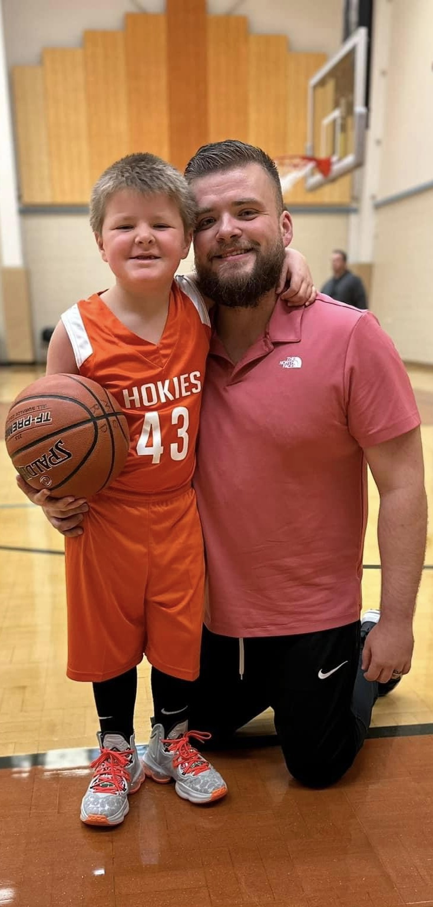

About NBA Stat Checker
NBA Stat Checker is a live stats application that provides users with the opportunity to search for live statistics of NBA players by simply typing their name in the search bar. Our app aggregates data from reliable sources and presents it in a user-friendly manner.
Whether you are a basketball enthusiast, a fantasy sports player, or just curious about the latest performance of your favorite NBA players, NBA Stat Checker is the perfect tool to stay up-to-date with real-time player statistics.
Meet Your Creators
Jordan Couch
Brent Jones
We are a team of passionate developers who share a love for basketball and technology. We created NBA Stat Checker with the goal of providing NBA fans with a convenient way to access live player stats. Our mission is to enhance your basketball experience and make it easier for you to follow your favorite players' performance.
Feel free to reach out to us with any feedback or suggestions. We value your input and strive to continually improve the NBA Stat Checker app for your enjoyment.